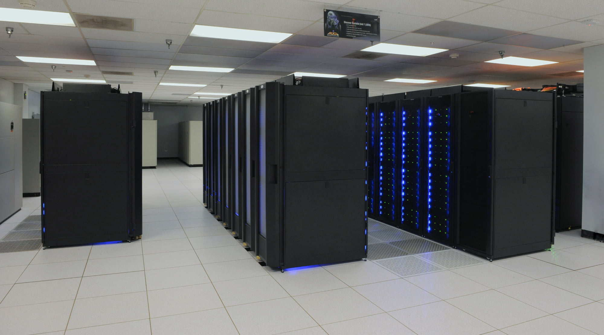
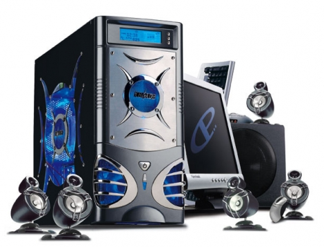
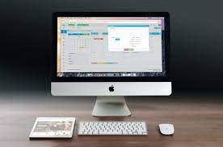

Mainframes
Son equipos capaces de gestionar muchas terminales y unidades periféricas de memoria a la vez, con capacidad para varios gigabytes.
Equipos ensamblados
Son mucho más económicos y flexibles que las computadoras de marca porque puedes adaptarlos a tus necesidades y preferencias.
Laptops
Son muy prácticas gracias a su ligereza y portabilidad que facilita que el usuario trabaje desde cualquier lugar.

Computadoras de escritorio
Diseñadas para estar en un lugar fijo, regularmente ofrecen más potencia, almacenamiento y versatilidad que otros equipos (laptops).
